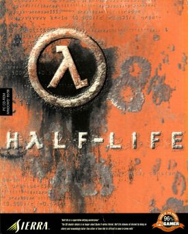
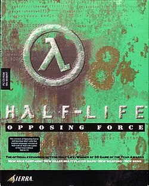
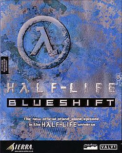
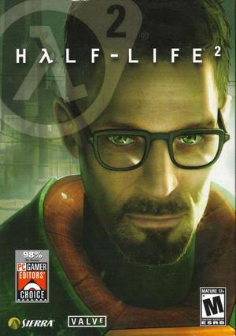
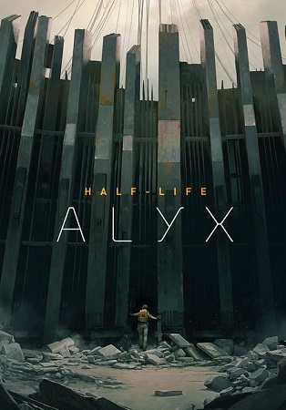

HλLF-LIFE
(укр. Період напіврозпаду, або Пів життя)
відеогра жанру науково-фантастичного шутера від першої особи,
розроблена Valve Software і видана Sierra Studios 20 листопада 1998 року для ПК.
Гра базується на значно переробленому ігровому рушієві Quake від id Software.
У 2001 році студія Gearbox Software портувала Hλlf-Life на ігрову приставку Sony PlayStation 2.
В 2013 році Valve портувала гру на платформи Linux і Mac OS.

Hλlf-Life: Opposing Force
(укр.Протилежна сила)
шутер від першої особи; додаток для гри Hλlf-Life,
розроблене компанією Gearbox Software у колаборації з Valve і випущене Sierra Entertainment 31 жовтня 1999 року.
Це доповнення представляє гравцеві той же сеттинг, що й оригінал, з тією лише різницею, що гравець бере під своє управління капрала Адріана Шепарда, солдата спецпідрозділу HECU.
У 2005 році Opposing Force вийшла в Steam у складі набору Hλlf-Life 1 Anthology.

Hλlf-Life: Blue Shift
відеогра, друге доповнення для шутера від першої особи Hλlf-Life, розроблене компанією Gearbox Software і випущене 12 червня 2001 року для Windows.
Версії для OS X та Linux вийшли тільки 31 липня 2013 року.
Blue Shift зображує події, що відбуваються паралельно з оригінальною Hλlf-Life, але з точки зору охоронця «Чорної Мези» — Барні Калхауна.
На відміну від Opposing Force, Blue Shift не вимагає наявності на комп'ютері оригінальної версії гри.
Blue Shift включає пакет покращеної графіки «Hλlf-Life High Definition Pack», що містить оновлені, більш деталізовані моделі персонажів і зброї.

Hλlf-Life: Decay
(англ. Розпад)
третє доповнення для шутера від першої особи Hλlf-Life, розроблений компанією Gearbox Software спеціально для ігрової консолі PlayStation 2.
Доповнення було випущено компанією Sierra Entertainment разом з портованою версією Hλlf-Life 14 листопада 2001 року в іграх 2001 року.
На відміну від інших ігор серії Hλlf-Life, Hλlf-Life: Decay розрахована на двох гравців та їх спільне проходження гри в режимі роздвоєного екрана.

Hλlf-Life 2
науково-фантастичний шутер від першої особи, продовження відеогри Hλlf-Life, розроблене та видане Valve Corporation.
Гра вийшла 16 листопада 2004 (21 листопада 2004 в країнах СНД, видана компанією SoftClub) для Windows і здобула найвищі оцінки багатьох авторитетних видань.
Версія для Xbox була випущена 15 листопада наступного року.
У складі збірки The Orange Box гра вийшла для Xbox 360 і PlayStation 3 наприкінці 2007 року.
Вихід для Mac OS відбувся 26 травня 2010 року[4], а для Linux 9 травня 2013.
У 2014 році її було видано для пристроїв під керуванням Android з серії SHIELD.

Half-Life: Alyx
відеогра, шутер від першої особи віртуальної реальності (VR), розроблений компанією Valve та видана для Windows 23 березня 2020 року.
Це перша гра в основній серії Half-Life з моменту виходу Half-Life 2: Episode Two (2007), і хронологічно охоплює події, що передують Half-Life 2.
Компанія Valve описала свою VR гру як «флагманську», вона була розроблена за допомогою рушія Source 2 і підтримує всі сумісні з ПК гарнітури VR.